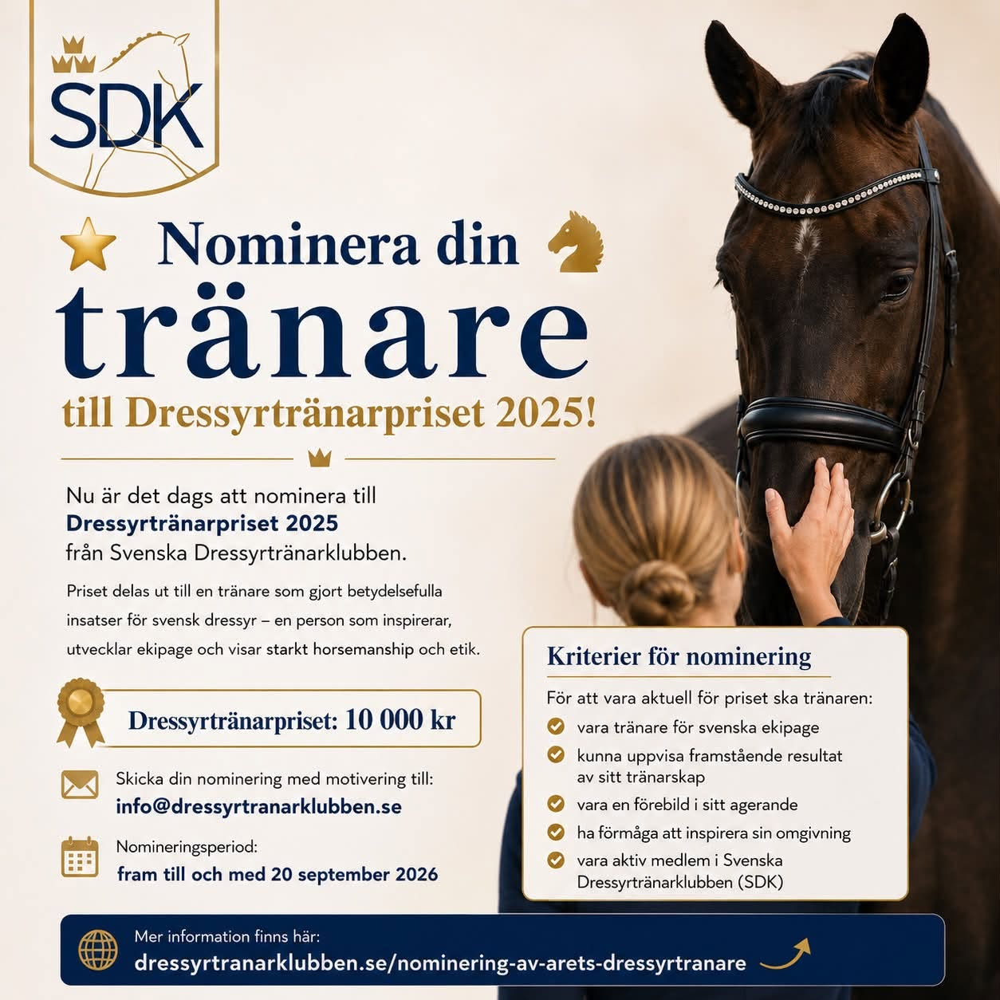
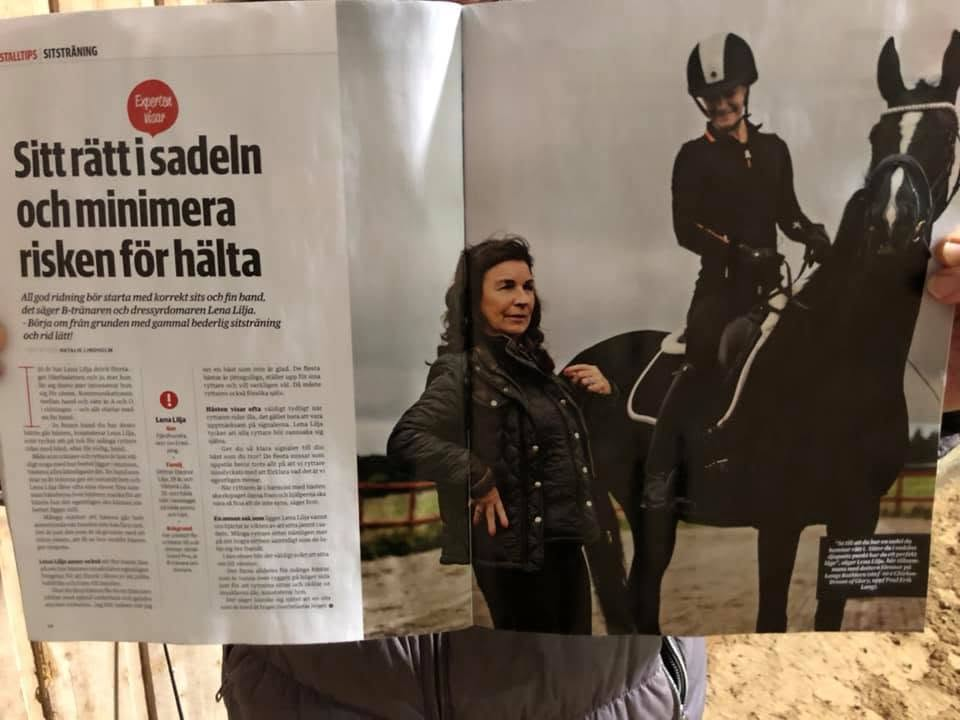
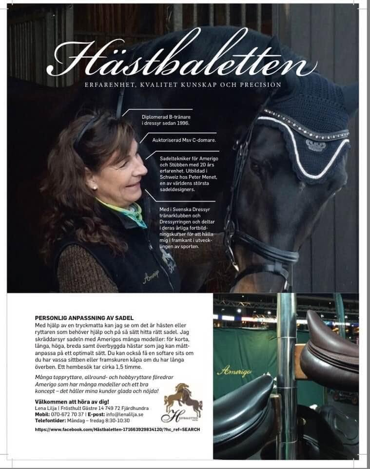
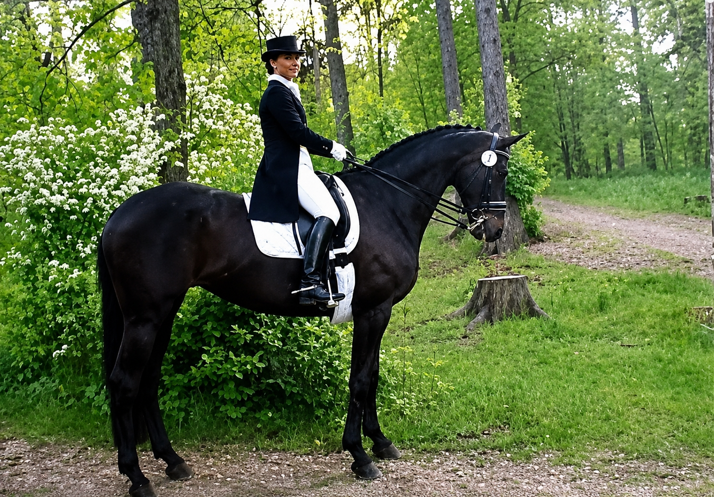
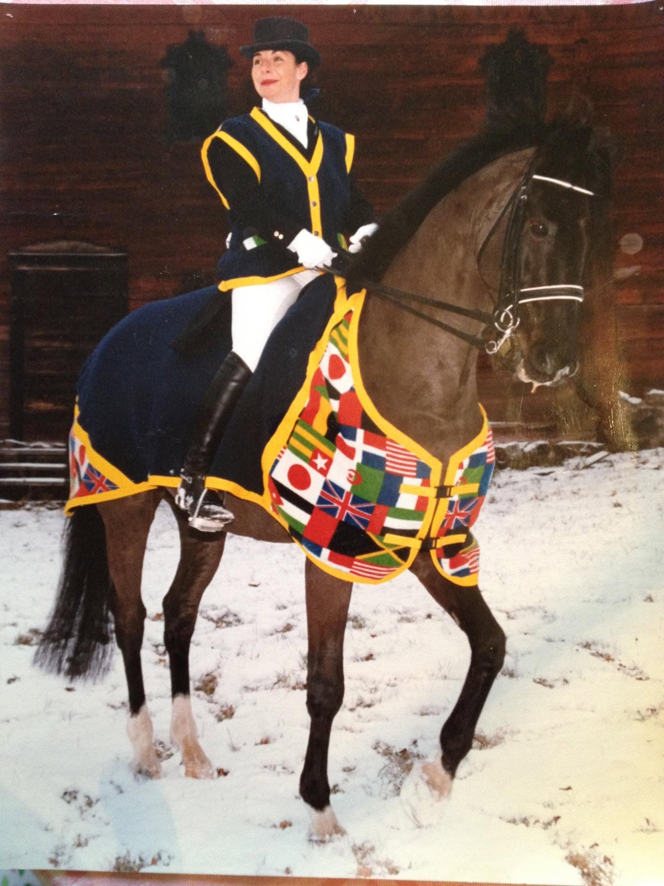
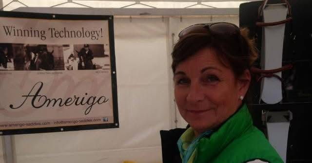
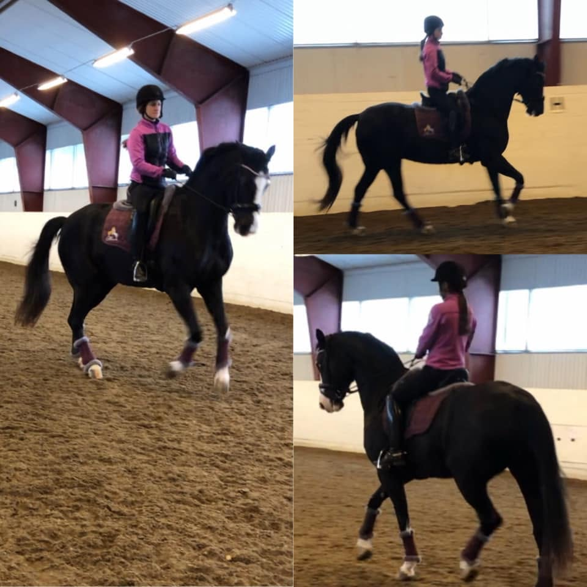
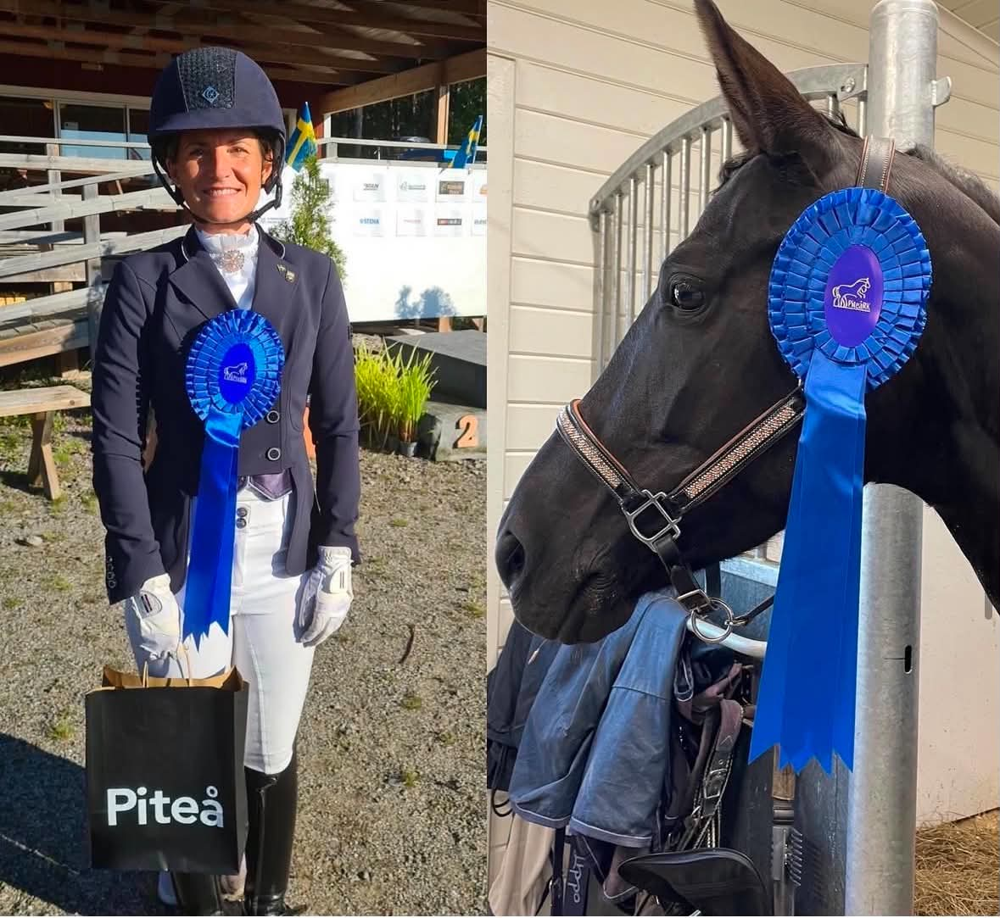

Lena Lilja och Hästbaletten i tidningar och i vardagen – ett urval från dressyr, sadelutprovning och tävling.

Lena Lilja är nominerad till Svenska Dressyrtränarklubbens Dressyrtränarpris – ett fint erkännande för hennes arbete som dressyrtränare och domare.
Nomineringen är öppen till och med 20 september 2026. Vill du nominera Lena? Skicka din motivering till info@dressyrtranarklubben.se.
Läs mer & nominera








Fler bilder läggs till löpande.
Hör av dig med frågor om sadlar, sadelprovning eller träning – jag berättar gärna mer.